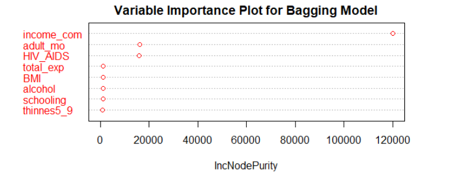
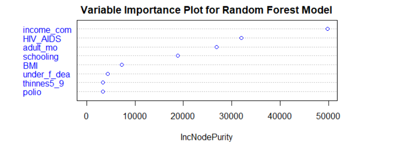
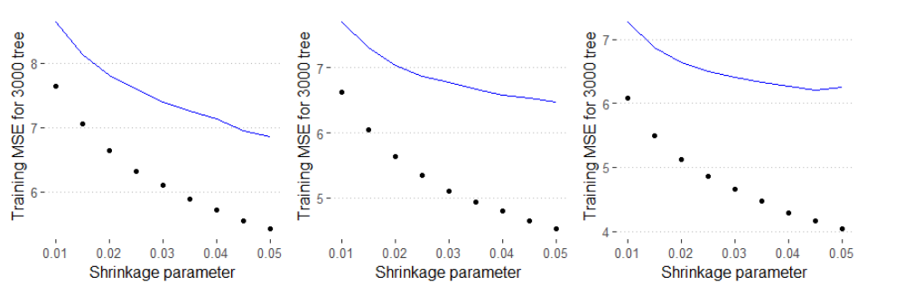
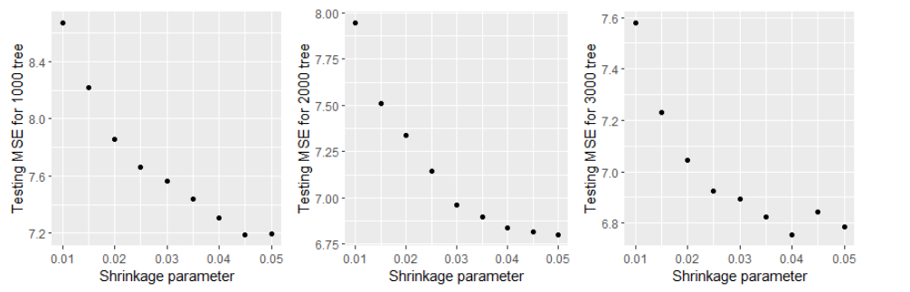
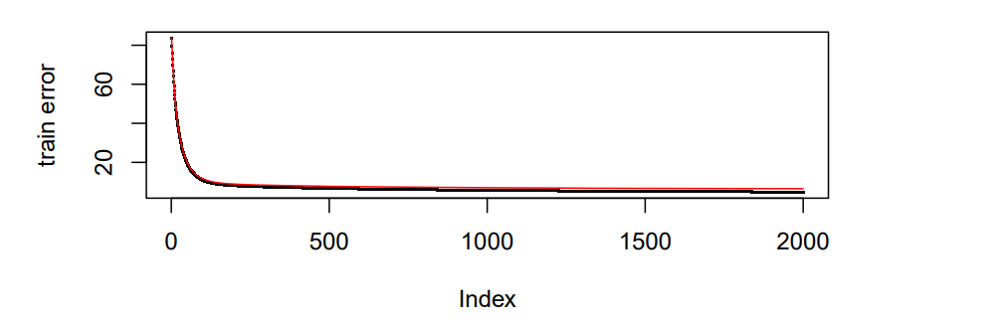
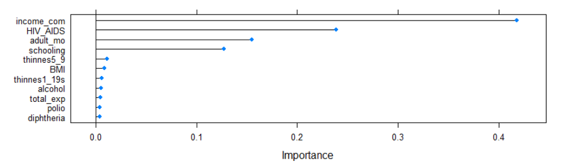

Models
Shiyuan Zhou
Inferential Models Comparing HDI and Health Expenditure
To compare whether HDI or health expenditure have stronger relationship with life expectancy, we use them as predictors and fit linear. linear mixed (year as random effect), and spline models. Since we also want to add consideration of development status, we will fit all the models and adjusted by status again.
Models without adjusted by development status
Linear models:
M1: Total expenditure as predictor: lm(life_exp ~ total_exp, data = ds)
M2: Income composition of resources as predictor: lm(life_exp ~ income_com, data = ds)
Linear mixed models:
M3: Total expenditure as fixed effect and year as random effect: lmer(life_exp ~ total_exp + (1|year), data = ds)
M4: Income composition of resources as fixed effect and year as random effect: lmer(life_exp ~ income_com + (1|year), data = ds)
Spline models:
M5: Total expenditure as smooth terms: gam(life_exp~ s(total_exp,bs=“cr”,k=3),data=ds)
M6: Income composition of resources as smooth terms: gam(life_exp~ s(income_com,bs=“cr”,k=3),data=ds)
Models with adjusted by development status
Linear models:
M7: Total expenditure and status as predictor: lm(life_exp ~ total_exp + status_ind, data = ds)
M8: Income composition of resources and status as predictor: lm(life_exp ~ income_com + status, data = ds)
Linear mixed models:
M9: Total expenditure and status as fixed effect and year as random effect: lmer(life_exp ~ total_exp + status + (1|year), data = ds)
M10: Income composition and status of resources as fixed effect and year as random effect: lmer(life_exp ~ income_com + status + (1|year), data = ds)
Spline models:
M11: Total expenditure as smooth terms adjusted by status: gam(life_exp~ s(total_exp, bs=“cr”,k=5) + status,data=ds)
M12: Income composition of resources as smooth terms adjusted by status: gam(life_exp~ s(income_com, bs=“cr”,k=3) + status, data=ds)
Machine Learning Models Predict on Life Expectancy
Discussed Variable meaning:
- income_com: Income composition of resources, which is HDI in our research.
- Adult Mortality: Adult Mortality Rates of both sexes (probability of dying between 15 and 60 years per 1000 population)
- HIV/AIDS: Deaths per 1 000 live births HIV/AIDS (0-4 years)
- Schooling: Number of years of Schooling(years)
- BMI: Average Body Mass Index of entire population
Regression Tree
In this section, we will perform basic machine learning techniques on our life expectancy data. We will fit regression tree, bagging, random forest, gradient boosting, and extreme gradient boosting models to predict life expectancy based on the social factors in the data. Our aim is finding a most predictive model from them by comparing their MSE.
By fitting a regression tree, we are able to find a optimal complexity parameter that has the minimal cross-validation error in the CP table. Based on that optimal complexity parameter, we are able to pruned the tree which help to reduce complexity and over-fitting of our decision tree model and improve prediction. Its MSE was also calculated for further model comparison. Since there are too may splits in our pruned regression tree. Visualizing it could be difficult but we can still evaluate it by its MSE.
Bagging and Radom Forest
Fitting random forest and bagging models help us to find the most important features to predict life expectancy.


According to the variable importance plots we have for bagging and random forest. Variable ‘income_com’ is the most important features in both models. Adult mortality, HIV/AIDS deaths, and BMI are also quite significant in both models.
Gradient Boosting Model
Gradient Boosting Model was also fitted to our data. To improve performance, we did parameter tuning on both shrinkage parameter and number of trees. We picked 1000, 2000, and 3000 as possible numbers of trees. Since there is pretty much tree fitted, which means a slightly large learning rate could be helpful on decaying the gradient. Hence, the range for possible learning rate we picked is 0.01 to 0.05 by 0.0005 on each step.
Plot of Training and Testing MSE
We also calculate each model’s training MSE, cross validation error, and testing MSE for comparison to pick our final boosting model.

According to the plot, we could find that as the shrinkage increases, the training MSE decreases. The reason for that may be we fit the training set better and better when the shrinkage increases, which may lead to an over-fitting. Hence, we need to pick the optimal value of shrinkage parameter by their cross validation error. For 1000 and 2000 trees models, the validation error is gradually decrease when learning rate increase. However, The validation error increases when we have learning rate over 0.45 in 3000 trees model, which means higher shrinkage may not reduce validation error. Additionally, higher learning rate also result in high risk of over-fitting. Hence, pick learning rate around 0.04 would be optimal.

According to our three plots of testing MSE for each number of trees with different shrinkage parameter, we can see that the testing MSE increases or become flatten after x = 0.04, which means we should pick it as our value of shrinkage parameter. For number of trees, ‘1000’ has the largest MSE around 7.2. However, for ‘2000’ and ’3000, their MSE are similar, both are around 6.75. To reduce our model complexity and save efficiency, we should pick 2000 as our number of trees. Hence, our final learning rate is 0.04 and 2000 tress will be fitted and we calculate its test MSE for further model comparison.

According to the plot we have, the deviation between validation error and train error is become smaller as we have more iterations.

| var | rel.inf |
|---|---|
| income_com | 53.5392601 |
| HIV_AIDS | 27.6703612 |
| adult_mo | 10.8676242 |
| total_exp | 1.5201438 |
| thinnes5_9 | 0.9870762 |
| diphtheria | 0.8968485 |
| under_f_dea | 0.7698618 |
| schooling | 0.5839717 |
| thinnes1_19s | 0.5536858 |
| infant_dea | 0.4786721 |
| alcohol | 0.4627847 |
| Measles | 0.3262638 |
| GDP | 0.2871837 |
| polio | 0.2586204 |
| BMI | 0.2242984 |
| population | 0.2204558 |
| hepatitis_B | 0.1817465 |
| percent_exp | 0.1327260 |
| status_num | 0.0384154 |
According to the variable importance plot we have, there is a clear difference in relative influence between variables. There are three most important variables: HDI(income_com), ‘HIV/AIDS death’, and adult mortality, that dominate our boosting model, which means simpler model may have similar performance. By the table for each variable and their corresponding relative influence in Gradient Boosting Model. The variable that is the most influential is ‘income_com’, indicating HDI, with relative influence 55.4197399. Variable ‘total_exp’, indicating health expenditure, has relative influence 1.5076932.
Perform Extreme Gradient Boosting
Based on the wrangled data, we perform extreme gradient boosting model to predict life expectancy. We set up a tuning grid that can help us to perform grid search on eta, max_depth, and nrounds. Based on our data, and ‘xgbTree’ method, we train our xgb model on the tune grid. After training, we have our variable importance plot.

According to the plot, we can see that the difference of importance between variables are pretty clear. Variable ‘income_com’ is also the most important feature in extreme gradient boosting model. Total expenditure is the 11th important variable. We also find HIV/AIDS deaths and adult mortality, and schooling played an significant role in predicting life expectancy.
Copyright © 2022, Shiyuan(Eric) Zhou.